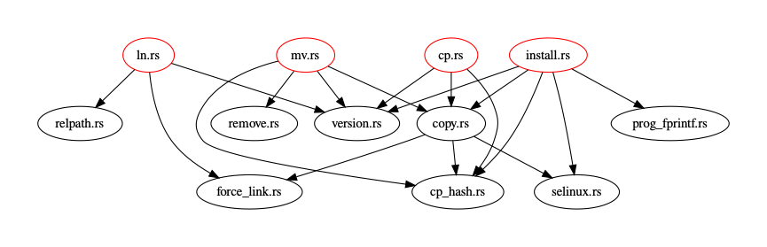

工具原理及使用说明
1. 工具原理
基础命令工具集相对于其他C语言项目而言存在的特点是库文件分散，二进制文件众多且依赖关系错综复杂。比如openeular:22.03-lts中使用的coreutils-9.0就在160余个原地C语言文件和GNUlib中的800余个文件的相互依赖下生成了107个二进制文件。人工梳理这些依赖关系显得非常不现实。
针对这个问题，本工具基于Clang解析的语法树的自动分析依赖。该工具首先先利用Bear等工具获取在编译基础命令时所调用的所有编译命令，得到Clang格式的compile_command.json文件。然后基于该文件通过Clang解析编译期间所涉及的所有C语言文件进行语法树解析，对不同文件之间语法树中出现的调用关系进行提取。因为C语言本身并不支持符号声明和定义之间的精确链接（在Rust中并不区分声明和定义），我们在此基础上设计了模糊匹配的依赖构建框架。依赖构建过程中可以将符号的声明和定义根据用户可调节的不同的模糊程度进行匹配，最终构建得到整个项目的依赖关系。

2. 工具使用说明
2.1 依赖提取工具
依赖提取工具名字为deps-exporter，使用方式基本如下：
deps-exporter [OPTIONS] <COMPILE_COMMANDS> [--] [EXTRA_CLANG_ARGS]...
用法与ec2rust-transpile工具基本相同，其中COMPILE_COMMANDS为编译命令文件，EXTRA_CLANG_ARGS为额外的Clang参数。两个命令区别在于deps-exporter只会输出依赖关系，而ec2rust-transpile会同时输出转换后的Rust代码。
基础用法可以参考c2rust-transpile的官方文档，或者使用帮助命令deps-exporter --help查看。如下只谈及deps-exporter的特殊用法。
deps-exporter支持的特殊选项如下：
# 指定输出依赖关系的文件（json格式）
--dependency-file <DEPENDENCY_FILE>
Path to a file to write out the dependency information [default: ./dependencies.json]
2.2 依赖构建库/可视化工具
依赖构建库/可视化工具名字为deps-builder，使用方式基本如下：
deps-builder [OPTIONS]
主要参数如下：
--bin <BIN>
Emit Rust dependencies for the given binaries
--bins
Emit Rust dependencies for all binaries (with main defined)
--dependency-dot <DEPENDENCY_DOT>
Path to a file to write the dependency graph to [default: ./dependencies.dot]
--dependency-file <DEPENDENCY_FILE>
Path to a file to with the dependency information [default: ./dependencies.json]
--fuzz-depends-level <FUZZ_DEPENDS_LEVEL>
Use fuzzing dependency checking [default: 0]
其中需要提供一个之前使用deps-exporter或者ec2rust-transpile生成的依赖关系文件（json），deps-builder会根据该文件构建整个项目的依赖关系。构建完成后，deps-builder会输出一个.dot文件，可以使用Graphviz工具将其转换为图片。同时，deps-builder作为一个库也可以被其他工具调用，用于构建整个项目的依赖关系。比如在ec2rust-transpile中就使用了deps-builder来构建整个项目的依赖关系。
其中FUZZ_DEPENDS_LEVEL参数用于控制依赖关系的模糊程度，值越大匹配越模糊，总共有四档如下：
- 当且仅当符号的声明和定义所在的文件路径完全相同才会被匹配。
- 当符号的声明和定义所在的文件名相同才会被匹配，比如
a.c和a.h会被匹配。 - 当符号的声明和定义所在的文件路径相同就会被匹配，比如
/a/b/c/d/x.c和/a/b/c/d/y.h会被匹配。 - 当符号的声明和定义相同则会被匹配。
构建得到的依赖关系是一个有向图，其中节点为文件，边为文件之间的依赖关系。可以使用Graphviz工具将其转换为图片，如下是部分依赖关系图：

其中红色节点为二进制文件，其他是库文件。这里只展示了其中几个二进制且不包含gnulib的依赖关系。
依赖构建会提取每个二进制的有向联通子图作为该二进制的依赖关系，因此可以通过--bin参数指定要提取的二进制文件，也可以通过--bins参数仅提取所有有main函数的二进制文件。
2.3 翻译工具
翻译工具名字为ec2rust-transpile，其中包含了依赖提取工具和依赖构建工具。使用方式和deps-exporter基本相同，只是ec2rust-transpile会同时输出转换后的Rust代码。
其中也包含了deps-builder参数，可以通过--dependency-file参数指定依赖关系文件的输出路径，通过--fuzz-depends-level参数指定依赖关系的模糊程度。